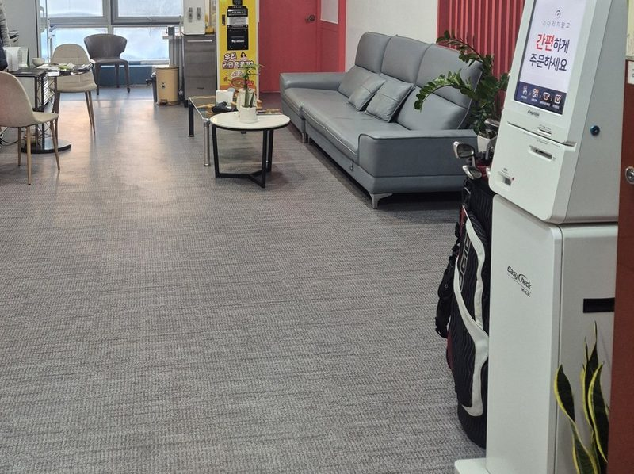

올해 골프 지표를 보면 사람들이 돈 쓰는 방식이 눈에 띄게 달라졌습니다. 대한골프협회가 11월 초에 발표한 조사에서 평일 라운드 비중이 2023년 48.1%에서 2025년 62.2%로 올랐고, 평일 오전 라운드도 21.8%에서 31.1%로 늘었습니다. 주말 대신 평일을 고르는 사람이 많아졌다는 뜻입니다. 같은 기간 골프 활동 인구는 624만 명에서 581만 명으로 줄었고요. 많이 치는 대신 한 번에 덜 쓰는 쪽으로 움직였다고 읽었습니다.
그러면 실내 연습장 쪽 질문은 하나로 좁혀집니다. 1회 결제와 정기권 중 뭐가 나은가. 계산은 요금표만 있으면 됩니다.
| 1회 | |
|---|---|
| 스크린 18홀 (1인) | 10,000원 |
| 연습장 1시간 | 10,000원 |
| 연습장 정기권 | |
| 1개월 | 120,000원 |
| 3개월 | 330,000원 |
| 6개월 | 600,000원 |
기간권 값을 1회 값으로 나누면 '몇 회 이상 가야 남는가'가 바로 나옵니다.
| 기간권을 회수로 환산 | |
|---|---|
| 1개월 120,000원 | 12회분 |
| 3개월 330,000원 (월 110,000원) | 월 11회분 |
| 6개월 600,000원 (월 100,000원) | 월 10회분 |
그래서 기준선은 세 개입니다. 한 달에 12회 넘게 가면 1개월권이, 11회를 넘기면 3개월권이, 10회를 넘기면 6개월권이 1회 결제보다 쌉니다. 반대로 한 달에 8회 정도라면 80,000원이니 1회로 끊는 게 낫습니다.
겨울에는 이 계산이 조금 달라집니다. 공을 치러 오는 날과 그냥 몸을 푸는 날이 섞이기 때문입니다. 저는 기간권을 살 때 '최소 몇 회는 올 수 있는 달'을 먼저 세고, 그 달에만 기간을 맞춥니다. 못 채운 회차는 그냥 사라지니까요.
요금표에는 기간권의 사용 조건이 적혀 있지 않습니다. 하루에 한 번만 되는지, 시간 제한이 있는지, 타석 지정이 있는지는 표에 없습니다. 이 세 가지에 따라 12회분의 값이 달라지므로, 기간권을 생각하고 계시면 방문 전에 051-747-9933으로 물어보시는 게 정확합니다. 아래는 제가 전화로 확인할 때 적어 두는 항목입니다.
전국에 깔린 스크린골프 시뮬레이터는 2026년 2분기 기준 5만 7,600여 대입니다(골프존홀딩스 반기보고서, 참여와혁신 2026-11-19 인터뷰에서 인용). 겨울에 땅이 얼어 야외 라운드가 어려운 기간이 1년에 4~5개월이라는 설명도 같은 인터뷰에 나옵니다. 매장을 고를 때 기기 종류와 거리, 주차를 같이 보게 되는 이유입니다.
타석·스크린 룸·단체는 전화로 예약하시는 게 가장 빠릅니다.